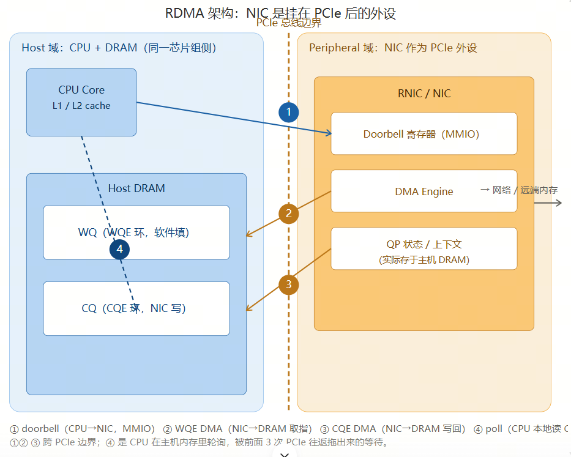

在经典 TCP/IP 网络栈中，一次数据收发需要 CPU 大量介入：
发送：数据从用户态拷贝到内核态（系统调用）→ 经过 TCP/IP 协议栈逐层封装（计算校验和、分段）→ 再从内核拷贝到网卡缓冲区（DMA）。
接收：完全反向，网卡 DMA 到内核 → 协议栈处理 → 拷贝到用户态。
由此带来三大问题：多次内存拷贝（CPU 开销大）、频繁上下文切换（用户态↔内核态）、协议栈占用 CPU。结果就是延迟高（通常为几十到几百微秒），且高带宽下 CPU 容易成为瓶颈。
四个水平带代表数据在发送过程中依次驻留的不同内存地址空间；带与带之间的箭头表示一次地址搬移，并标注搬移方式与执行者。
应用数据 (payload)协议头部 (header)用户态内存内核态内存物理 / DMA 内存网卡硬件
原地前置协议头，payload 字节不再复制 [Eth][IP][TCP] 头部 payload（同前） VA_k = 0xffff8880_1a2b ③④⑤ 封装：保留 headroom → 前置 TCP/IP/Eth 头；若超 MSS 则分片(复制)；校验和/分片处理 ⑥ DMA 映射 (dma_map_single) VA_k → 总线物理地址 PA（地址翻译，不搬数据） * 无 SG 时还需"线性化拷贝"→ 又一次 CPU 拷贝 ⑦ 物理内存 / DMA 地址 (PA，网卡可见) 同一份数据，经 IOMMU/MMU 映射为总线物理地址，供网卡 DMA 读取 数据块 (DMA-able) PA = 0x0000_1a2b_0000 ⑧ NIC DMA 引擎读取 硬件搬移：物理 RAM(PA) → 网卡内部（CPU 不参与） ⑨ 网卡内部 TX FIFO / 缓冲（硬件地址空间） 网卡加 FCS / 校验和（若 offload）→ 串行化 → 发送到线路 数据块 (NIC FIFO) → 线路 (电信号/光信号) ① 系统调用陷入 (syscall) 用户态→内核态特权切换；此时数据仍在 VA_u
核心结论：经典发送路径里，数据要经历至少两次 CPU 参与的地址搬移——② 用户 VA→内核 VA（copy_from_user）以及可选的⑥线性化拷贝；而真正"上线路"的那一次（⑧）才由网卡 DMA 引擎搬，CPU 不碰数据。协议头则在③\~⑤于内核态原地添加。
1
系统调用陷入（syscall trap）
应用执行 send(fd, buf, len, 0)。CPU 从用户态（ring 3）陷入内核态（ring 0），保存寄存器、切换页表。此时数据仍只存在于用户虚拟地址 VA_u（如 0x00007ffd_1234），内核尚不能信任它（可能被换页或并发改写）。
2
copy_from_user() —— 第一次 CPU 内存拷贝
内核在 slab 中分配一个 sk_buff（skb），得到内核虚拟地址 VA_k（如 0xffff8880_1a2b_0000）。CPU 执行 memcpy/rep movs 指令，把字节从 VA_u 逐字复制到 VA_k。这是实打实的 CPU 搬移，占用 CPU 带宽且与数据量成正比。
地址搬移：VA_u（用户虚拟）→ VA_k（内核虚拟）
3
TCP 层封装（原地加头，payload 不复制）
TCP 在 skb 预留的 headroom 中前置 TCP 头（源/目的端口、序号、窗口、标志位）。若 payload 超过 MSS，会切分为多个 skb（此时 payload 需被复制/拆分成多份）。未超 MSS 时，payload 字节本身不移动，只是 skb->data 指针后移、前面挂上头部。校验和多在硬件 offload，否则软件计算（仍需读一遍 payload）。
4
IP 层封装
前置 IP 头（源/目的 IP、TTL、协议号、标识），做路由查找；若报文超过出接口 MTU 则 IP 分片（又是一轮复制/拆分）。数据仍在 VA_k 的内核内存中。
5
邻居 / 链路层封装
经 ARP/邻居表解析出下一跳 MAC，前置以太网头（目的 MAC、源 MAC、ethertype）。此时 skb 已成完整帧：[Eth][IP][TCP][payload]，全部位于内核虚拟地址 VA_k。
6
DMA 映射 —— 地址翻译（不搬数据）
驱动调用 dma_map_single()，借助 IOMMU / 总线地址转换，把 skb 对应的内核虚拟地址 VA_k 映射为总线物理地址 PA（如 0x0000_1a2b_0000），并把相关内存页钉住（pin）以防被换出。这一步只是建立"地址→物理"的映射，数据本身没有移动。
地址搬移：VA_k（内核虚拟）→ PA（总线物理，仅映射）
额外拷贝陷阱：若网卡不支持散射-聚集（SG）或帧不连续，驱动必须把 skb 线性化拷贝进一块连续的 DMA 缓冲区——这又是一笔 CPU 拷贝。
7
写 Doorbell（MMIO，非数据拷贝）
驱动把 TX 描述符（含 PA、长度）写入网卡的发送队列，再向网卡的 doorbell 寄存器做一次内存映射 I/O 写（MMIO）。这只是通知网卡"有包就绪"，不涉及数据搬移。
8
NIC DMA 引擎读取 —— 硬件搬移（CPU 不参与）
网卡的 DMA 引擎读取描述符，然后自行从主机物理内存 PA 处把整帧 DMA 进网卡内部的 TX FIFO / 缓冲。这一搬移由网卡硬件完成，CPU 完全不碰数据。
地址搬移：主机物理 RAM（PA）→ 网卡内部硬件内存
9
网卡送出线路
若开启 offload，网卡硬件计算并填入校验和 / FCS；随后把帧串行化为比特流，通过 PHY/MAC 发送到物理线路（电信号或光信号）。数据就此离开主机。skb 在内核中被释放，用户 buffer 也可被应用复用。
为什么经典栈慢：瓶颈在 ② 的 CPU 拷贝（以及无 SG 时⑥的额外拷贝）和 ③④⑤ 的协议栈逐层处理——每一次都是 CPU 在搬数据或算头。而真正"上线路"的 ⑧ 本可由硬件完成，却被前面这些 CPU 工作拖慢。
RDMA（Remote Direct Memory Access，远程直接内存访问）允许一台机器的网卡直接读写另一台机器的内存，而无需对方 CPU 参与——远端 CPU 既不知情、也不做拷贝。
三大核心特性：
内核旁路 用户态应用通过 verbs API 直接操作网卡，绕过内核协议栈。
零拷贝 数据在用户内存与网卡间直接 DMA，不经过内核缓冲区。
协议卸载 可靠传输、重传、拥塞控制等由网卡硬件完成。
收益：端到端延迟从几十 μs 降到 \~1 μs 量级；吞吐接近线速；CPU 占用极低。这正是高性能计算、分布式存储、AI 训练集合通信追求 RDMA 的原因。
RDMA流程：CPU和网卡之间的交互流程

交互图逐条拆解（对应你列的 4 步）
① doorbell MMIO（CPU→NIC，跨 PCIe）：CPU 执行一条 store 写 NIC 的 doorbell MMIO 地址，告诉NIC网卡"WQ 里有活儿了"。
② WQE DMA（NIC→DRAM，跨 PCIe）：NIC 的 DMA Engine 反向 DMA 到主机 DRAM，把软件填好的 WQE（操作类型、本地/远端地址、长度）取回来解析。
③ CQE DMA（NIC→DRAM，跨 PCIe）：操作完成，NIC 把 CQE（完成队列项）DMA 写回主机 DRAM，CPU 这才知道"完了"。
④ poll（CPU→DRAM，本地、不跨 PCIe）：CPU 轮询主机 DRAM 里的 CQE 看完成没。这一步本身在主机内存内，但它是被前面 3 次 PCIe 往返拖出来的等待——没有 WQE/CQE 这套间接层（RDMA verbs 模型必然有），就不需要它。
⑤⑥ 真实数据通路（补全）：NIC 去远端取 64B（⑤ 走线缆、不跨 PCIe），再把数据 DMA 写回主机缓冲（⑥ 又是一次 PCIe 写）。所以实际 PCIe 往返不止 3 次。
为什么这是 scale-up 的致命伤（呼应前一轮 URMA 对比）
线缆线速本身只要 \~200ns，但 doorbell + 两次 DMA + poll + 数据 DMA 这一串 PCIe 边界往返和软件间接层，把一次 64B 读放大到 \~1.5–2.2µs（OpenURMA 实测 RoCEv2 RC 64B 取指 2186ns），且抖动大。
根因就一句：RDMA 的 verbs 模型把"应用身份 + 传输可靠性"焊在 QP 上，强制走 WQE/CQE 间接层，而 NIC 被当 PCIe 外设——于是任何细粒度操作都得反复跨 PCIe。
这正是 URMA TP Bypass 要解决的对手问题：把状态解耦后进片上 SRAM → 控制器搬上片上总线 → CPU 的 ld/st 一次片上穿越就出去，doorbell、WQE/CQE DMA、poll 全部省略，4 次 PCIe 往返塌缩成 1 次片上穿越（\~500ns，4.37× 提升）。
两张图已渲染：
架构图——左边 Host 域（CPU + DRAM），中间 PCIe 边界，右边 NIC 作为挂在 PCIe 后的外设（Doorbell 寄存器 / DMA Engine / QP 上下文），4 条链路用 ①②③④ 标在对应跨边界路径上。
交互时序图——按时间顺序排开 ① doorbell → ② WQE DMA → ③ CQE DMA → ④ poll，并补了 ⑤ 线缆取数、⑥ 数据 DMA 写回，清楚区分"哪些是跨 PCIe 的往返、哪些是主机内等待、哪些是真实数据通路"。
核心结论：① ② ③ 是明确的 PCIe 边界往返，④ poll 是主机内轮询但被前 3 次拖出来的等待，而真实数据通路还有第 6 步 PCIe 写——这就是 RDMA 把 NIC 当外设、被迫走 WQE/CQE 间接层的代价，端到端从线速 \~200ns 被放大到 \~1.5–2.2µs。对照前一轮，URMA 的 TP Bypass 正是把这 4+ 次 PCIe 往返"塌缩"成 1 次片上穿越。
需要的话，我可以再画一张 "RDMA 4 次 PCIe 往返 vs UB TP Bypass 1 次片上穿越"的并排对比图，把延迟构成直接对齐。